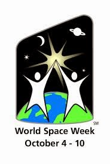

02 Ekim 2017 - Pazartesi
Dünya Uzay Haftası
4 - 10 Ekim Dünya Uzay Haftası
Dünya Uzay Haftası 1999 yılında Birleşmiş Milletler tarafından ilan edildi.
İnsanlığın uzay macerası iki önemli olayı kapsaması bu tarihlerin uzay haftası
olarak belirlenmesini sağlamıştır. Bu iki önemli olay şunlardır;
4 Ekim 1957 - Dünyanın ilk yapay uydusu SPUTNIK 1'in uzaya fırlatıldığı tarih.
10 Ekim 1967 - Ay ve Gök Cisimleri Dahil Uzayın Keşfi ve Kullanımmı için Devletlerin
Faaliyetlerini Düzenleyen İlkeler Antlaşması yapıldı.
Bu haftayla temel olarak toplumun uzay çalışmalarına olan ilgisini arttırmak hedefleniyor.